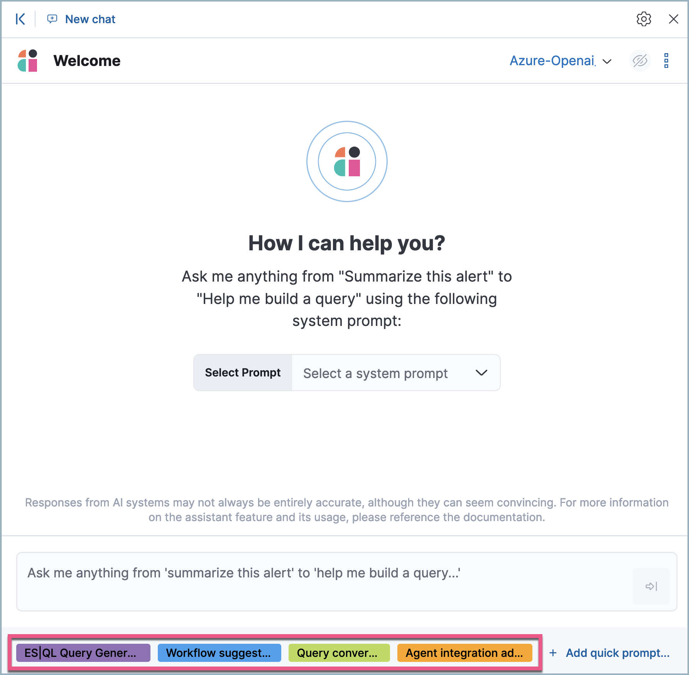

Security Assistantedit
The Elastic Security Assistant utilizes generative AI to bolster your cybersecurity operations team. It allows users to interact with Elastic Security for tasks such as alert investigation, incident response, and query generation or conversion using natural language and much more.
A connector for OpenAI and Azure OpenAI Service powers the Security Assistant.

This is an initial release of the Elastic Security Assistant. While designed to enhance your analysis with smart dialogues, its capabilities are still developing. Users should leverage it sensibly as the reliability of its responses might vary. Your insights, patience, and feedback help us calibrate this feature for optimal use. Always cross-verify any returned advice for accurate threat detection and response, insights, and query generation.
Also, the data you provide to the Security Assistant is not anonymized, and is stored and processed by the third-party AI provider. This includes any data used in conversations for analysis or context, such as alert or event data, detection rule configurations, and queries. Therefore, be careful about sharing any confidential or sensitive details while using this feature.
Set up the Security Assistantedit
You must complete these steps before you can use the Security Assistant:
-
Create an API key with your AI provider to authenticate requests from the Security Assistant. You’ll use this in a later step. Refer to the provider’s documentation for generating API keys:
-
Add the following feature flag to Kibana’s configuration settings:
xpack.securitySolution.enableExperimental: ['assistantEnabled']The configuration method depends on your deployment type:
-
Self-managed (on-premises) deployments: Add the feature flag to the
kibana.ymlfile, which is used to configure Kibana, then restart Kibana. - Elastic Cloud deployments: Use the YAML editor in the Elastic Cloud console to add the feature flag to Kibana user settings.
-
Self-managed (on-premises) deployments: Add the feature flag to the
-
Create a Generative AI connector using the AI provider’s API key and URL to configure communication between Elastic Security and the provider. You can do this in Kibana from Stack Management → Connectors, or from within the Security Assistant.
The Generative AI connector type requires the
assistantEnabledfeature flag for use.
Start chattingedit
To open the Security Assistant, press Cmd + ; (or Ctrl + ; in Windows) from anywhere in the Elastic Security app. This opens the Welcome chat interface, where you can ask general questions about Elastic Security.
You can also chat with the Security Assistant from several areas in Elastic Security, and context-specific data and prompts will populate your conversation.
- Alert details or Event details flyout: Click Chat while viewing the details of an alert or event.
- Rules page: Select one or more rules, then click the magic wand icon (🪄✨) at the top of the page next to the Rules title.
- Data Quality dashboard: Select the Incompatible fields tab, then click Chat. (This is only available for fields marked red, indicating they’re incompatible).
- Timeline: Select the Security Assistant tab.
All chat history and custom quick prompts persist in local browser storage, allowing you to navigate away to other areas in Elastic Security, then return to ongoing conversations. This also means that chats persist across multiple users if they use the same browser; be sure clear any chats that you don’t want available to other users.
Interact with the Security Assistantedit
Use these features to adjust and act on your conversations with the Security Assistant:
-
Select a system prompt at the beginning of a conversation to establish how detailed and technical you want the Security Assistant’s answers to be.

The system prompt is only configurable at the start of a conversation. To reconfigure it, clear the chat and start a new conversation.
-
Select a quick prompt at the bottom of the chat window to get help writing a prompt for a specific purpose, such as summarizing an alert or converting a query from a legacy SIEM to Elastic Security. Available quick prompts vary based on context. You can also add custom quick prompts for questions you frequently ask the Security Assistant.
 -
Use these buttons to perform actions in the conversation history and prompt entry area:
-
Add note to timeline (
 ): Create a note in Timeline using the selected text.
): Create a note in Timeline using the selected text.
-
Add to existing case (
 ): Add a comment to an existing case using the selected text.
): Add a comment to an existing case using the selected text.
-
Copy to clipboard (
 ): Copy the text to clipboard to paste elsewhere. This is also helpful for resubmitting a previous prompt.
): Copy the text to clipboard to paste elsewhere. This is also helpful for resubmitting a previous prompt.
-
Add to timeline (
 ): Add a filter or query to Timeline using the text. This button appears for certain queries in the Security Assistant’s responses.
): Add a filter or query to Timeline using the text. This button appears for certain queries in the Security Assistant’s responses.Be sure to specify which language you’d like the Security Assistant to use for queries. For example: "Can you generate an Event Query Language query to find four failed logins followed by a successful login?"
-
Clear chat (
 ): Delete the conversation history and start a new chat.
): Delete the conversation history and start a new chat.
-
Conversation settings (
 ): Choose the Generative AI connector that the Security Assistant uses, or create a new connector.
): Choose the Generative AI connector that the Security Assistant uses, or create a new connector.
-
Add note to timeline (